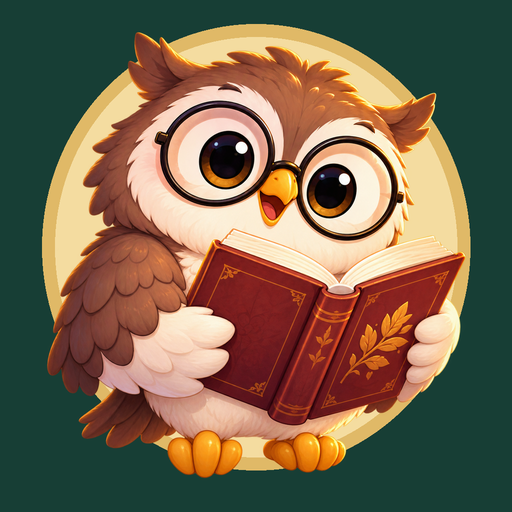

РОССИЯ · ANDROID · РУССКИЙ ЯЗЫК
Криптограммы:
Шифры совы
Разработчик: Никита Цурбан
Поддержка: prostosite42@gmail.com
Материалы готовы, выпуск ещё не отправлен. До публикации нужны релизная подпись, рабочие рекламные ID, завершённая публичная политика и проверка окончательного APK на Huawei. Старый APK 0.1.5 не подходит как готовый релиз.
Скриншоты игры
1080 × 2340 · JPEG · четыре полных экрана игры без рекламных подписей и рамок. Нажмите на снимок, чтобы открыть полный размер.


Исходники PNG находятся в screenshots_original/. Перед отправкой сравните их с финальной сборкой.
Иконки


Дополнительный баннер
Для продвижения. Не заменяет скриншоты игры и не заявлен обязательным ресурсом AppGallery.
Тексты для копирования
Название
24 символов
Краткое описание
78 символов
Полное описание
1653 символов
Что нового
182 символов
Примечания для модератора
883 символов
Все документы
- Состав комплекта и оставшиеся действия
- Проверенное состояние проекта
- Размеры и происхождение картинок
- Официальные источники
Подготовлено 28 сентября 2026 года. Это локальный комплект, а не опубликованная карточка магазина.